نضع بين أيديكم خبرات استشاريينا وأحدث أجهزة التشخيص المخبرية الرقمية المؤمتة بالكامل (Full Automation)، لنقدم لكم نتائج بالغة الدقة معتمدة بأرقى المعايير الدولية، ومحاطة بأعلى درجات العناية والسرية التامة.. لأننا نؤمن أن صحتكم وصحة أسركم أمانة في أيدينا.
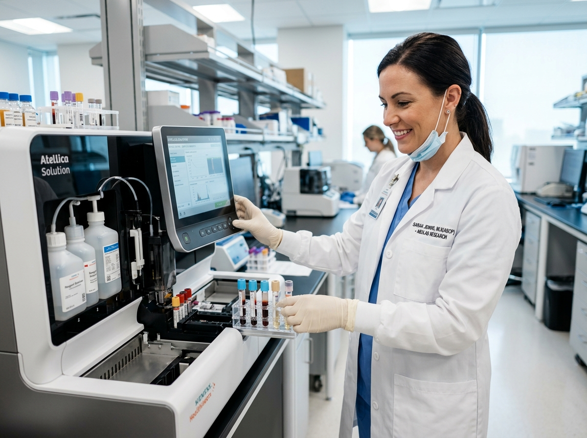
أعلى معايير الرقابة والجودة الدولية ISO
استشاري التحاليل الطبية والكيمياء الكلينيكية والتشخيص المخبري
يعد معمل الأهرام للتحاليل الطبية (Al-Ahram Lab) صرحاً طبياً تشخيصياً مرخصاً ومعتمداً، يلتزم بتقديم أدق النتائج المخبرية تحت شعارنا الدائم «دقة في النتائج ... ثقة تستحقها». نحن نلتزم بتطبيق المعايير العلمية الدولية عبر تجهيز مختبراتنا بأحدث أجهزة التحليل الرقمية الأوتوماتيكية، ونفخر بإشراف كوكبة من نخبة الاستشاريين وأخصائيي التحاليل الطبية ذوي الكفاءة العالية لخدمة صحتكم وصحة أسركم بكل تفانٍ وأمانة.
تطبيق صارم لكافة ضوابط واشتراطات منظمة الصحة العالمية والرقابة الدقيقة على الجودة
أتمتة مخبرية كاملة لجميع مراحل الفحص لضمان الدقة وتجنب أي خطأ بشري
مراجعة واعتمادافة التقارير الطبية من قِبل الأستاذة الدكتورة عفاف أحمد والخبراء
خبرة وكفاءة فائقة ورقة في التعامل أثناء سحب العينات للأطفال وحديثي الولادة وكبار السن
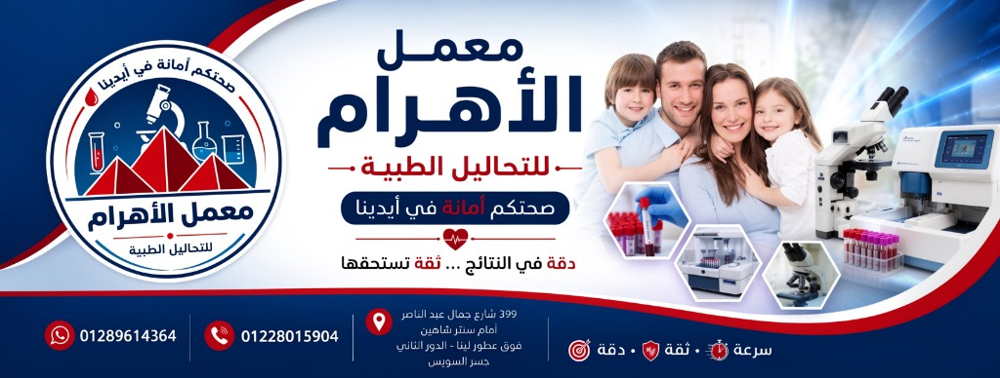
صممنا لكم وبإشراف استشاريي التحاليل الطبية مجموعة من الباقات المتكاملة التي تلبي كافة متطلباتكم الصحية والتشخيصية بأعلى دقة وأفضل عائد توفيري.
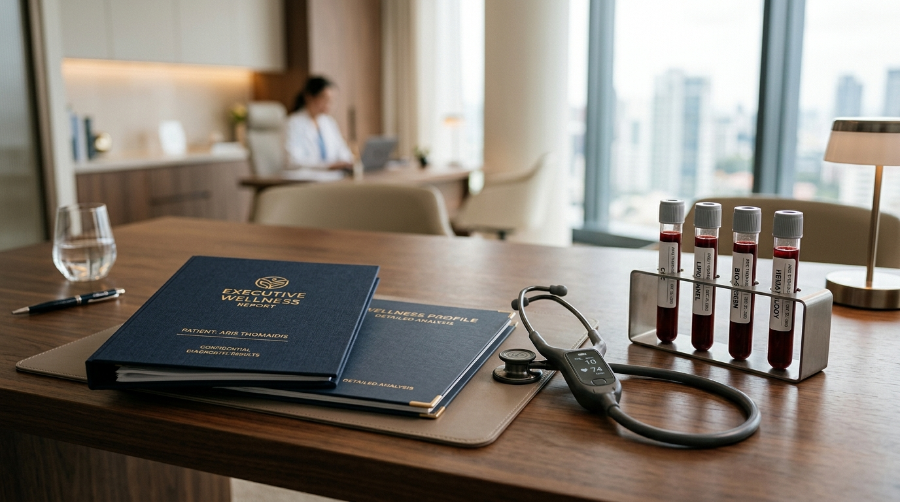
خصم يصل لـ 30% فحص شامل VIPالباقة الأهم والموصى بها للاطمئنان الكامل على كفاءة الأجهزة الحيوية للجسم ومؤشرات الصحة العامة، تمنحك صورة متكاملة ودقيقة للتقييم الدوري.
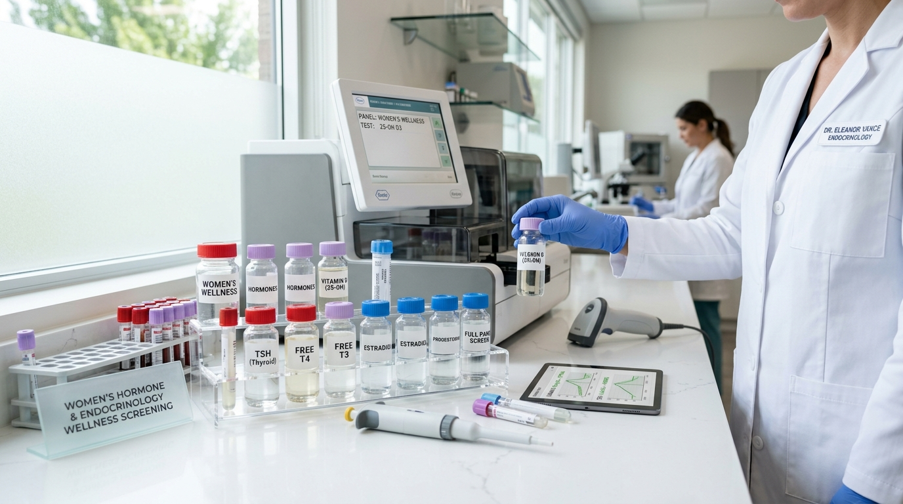
باقة متخصصة صحة المرأة والنشاطباقة متخصصة تم تصميمها بعناية فائقة لمتابعة التوازن الهرموني، كفاءة الغدة الدرقية، ومستويات المعادن والفيتامينات الأساسية لنشاط وصحة حواء.
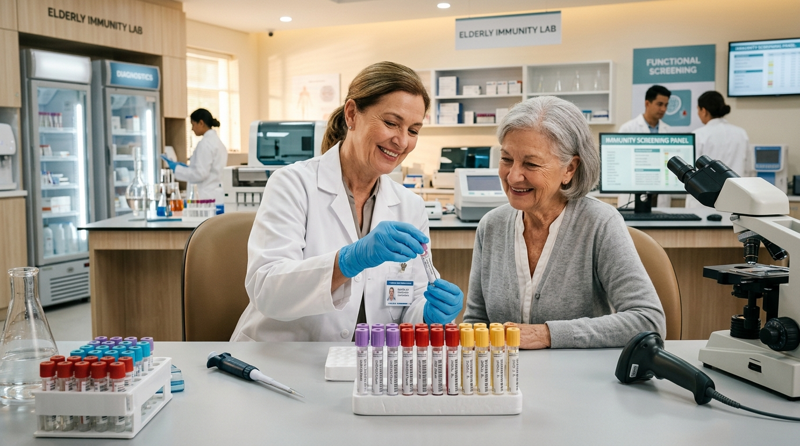
سحب منزلي متاح رعاية أهاليناتقييم وقائي متطور موجه لكبار السن وأصحاب الأمراض المزمنة، للكشف المبكر عن مؤشرات الالتهاب والسيولة وكفاءة عمل الأجهزة الداخلية لراحة بالكم.
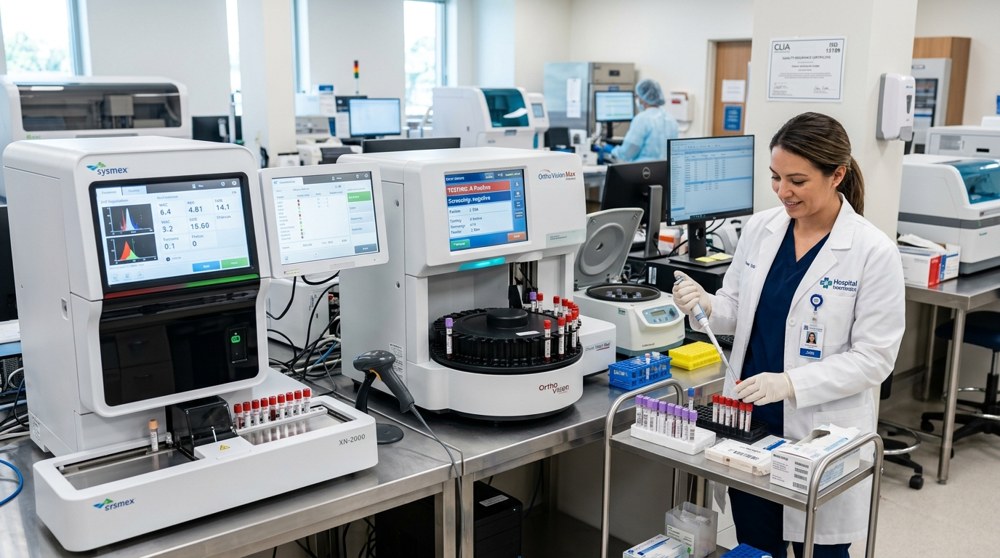
باقة الخطوبة والزواج فحص التوافقمن أجل بناء أسرة سليمة ومطمأنة، نقدم الفحص المخبري الشامل للخطيبين والمقبلين على الزواج للتاكد من التوافق الدموي والخلو من الأمراض الوراثية والمعدية.
نوفر كافة الفحوصات التشخيصية الروتينية والمتخصصة وفق أدق البرتوكولات العلمية وباستخدام أفضل الكواشف العالمية المعتمدة لضمان الموثوقية التامة.
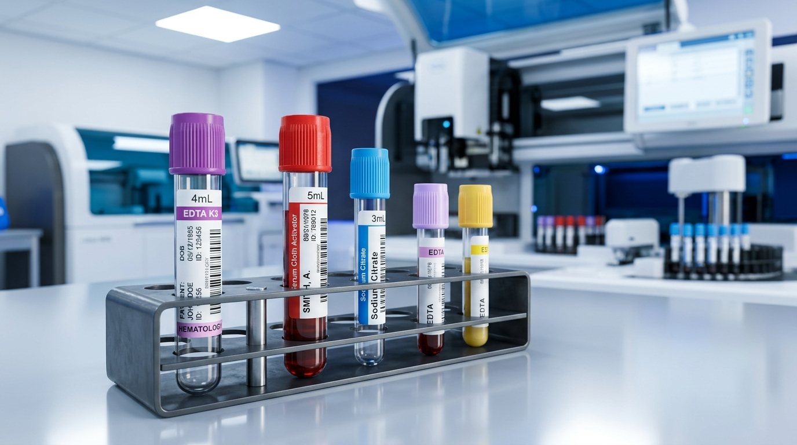
فحص دوري شاملباقات الفحص الدوري الشامل للاطمئنان الكامل على الصحة العامة، ومتابعة المؤشرات الحيوية لكافة أفراد الأسرة بدقة متناهية وسرعة فائقة.
استفسر عبر واتساب الآن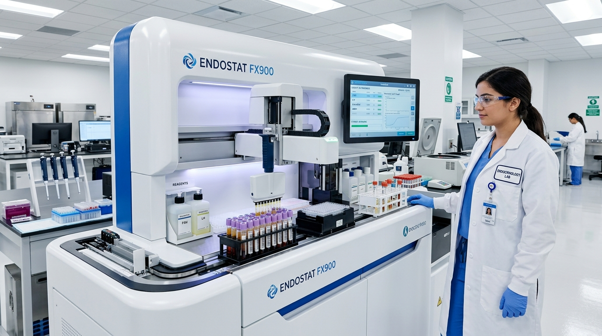
غدد صماء وهرموناتفحوصات الغدد الصماء المتخصصة، هرمونات الخصوبة والتكاثر، فحوصات الغدة الدرقية، ومتابعة مؤشرات هرمونات الحمل بمستويات قياس بالغة الدقة.
استفسر عبر واتساب الآنالكشف المتفحص عن الخلل الجيني والأمراض الوراثية وتحديد الاستعداد الوراثي للأمراض باستخدام أحدث تقنيات البيولوجيا الجزيئية وفحص حمض الـ DNA.
استفسر عبر واتساب الآن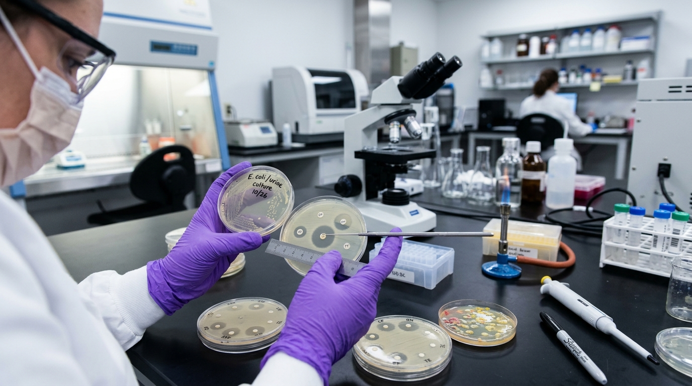
مزارع بكتيرية ومناعةفحص وإجراء المزارع البكتيرية والفطرية الدقيقة وتحديد المضادات الحيوية الأكثر فعالية (Antimicrobial Sensitivity) لضمان بروتوكول علاجي مستهدف وناجح.
استفسر عبر واتساب الآن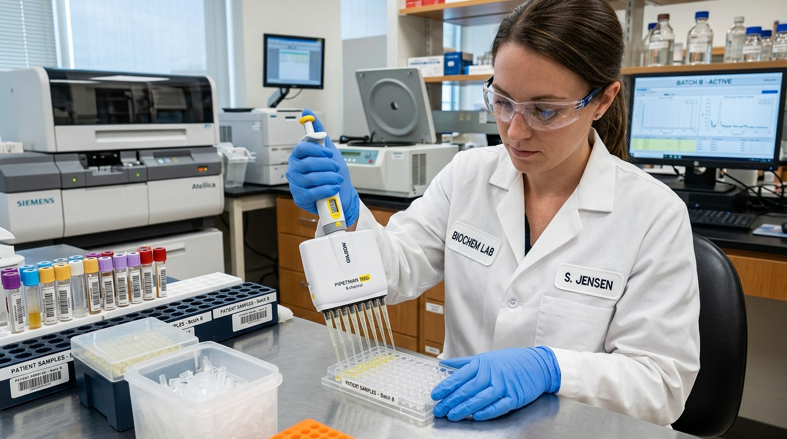
كيمياء حيوية وتراكميفحوصات وظائف وأنزيمات الكبد، كفاءة ووظائف الكلى، قياسات السكري التراكمي (HbA1c)، وصورة الدهون الشاملة والمؤشرات الأيضية الهامة في الدم.
استفسر عبر واتساب الآنتحديد فصائل الدم الدقيقة، فحص عامل الريسوس (Rh Factor)، واختبارات التوافق المخبري وتطابق العينات لضمان الأمان والموثوقية قبل الإجراءات الطبية.
استفسر عبر واتساب الآنحرصاً منا على راحة أهالينا من كبار السن والأطفال وذوي الأوقات المزدحمة، يوفر معمل الأهرام خدمة الزيارات المنزلية لسحب عينات الدم وكافة التحاليل تحت إشراف نخبة من أخصائيي التحاليل المدربين بأعلى اشتراطات مكافحة العدوى والتعقيم.
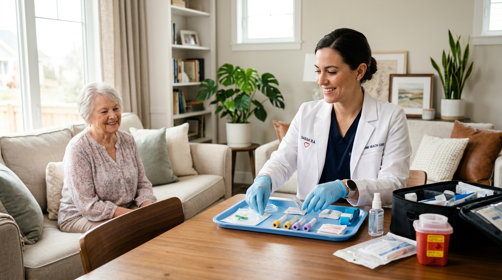
دون انتظار أو مجهود، قم بملء النموذج البسيط وسنقوم تلقائياً بتحويل طلبك فوراً إلى استشاري وموظف الحجز عبر واتساب لتأكيد موعدك مباشرة بأفضل سعر وموثوقية.
أدخل بياناتك ليرسلها النموذج منسقة إلى واتساب الحجز مباشرة:
إيماناً منا بأن دقة النتائج تبدأ من الاستعداد الصحيح، نقدم لعملائنا الكرام أهم الإرشادات العلمية الموصى بها قبل إجراء التحاليل المخبرية الهامة.
نعتز ونفخر دائماً بشهادات أهالينا من المراجعين والسادة الاستشاريين، والتي تعتبر الدافع الأكبر לנו للاستمرار في تقديم أعلى معايير الرقابة المخبرية الدقيقة.
«تجربة ممتازة فوق الوصف في خدمة سحب العينة المنزلية لوالدتي، دقة في المواعيد وتمريض محترم ومحترف جداً بدون أي ألم لكبار السن. شكراً للأستاذة الدكتورة عفاف أحمد على إدارة هذا الصرح المحترم.»
«كطبيب معالج، دائماً ما أعتمد بفضل الله على نتائج معمل الأهرام في متابعة حالات الهرمونات والكيمياء الدقيقة، نظراً لتطابق النتائج المخبرية تماماً مع الحالة السريرية بفضل الأتمتة الحديثة والخبرة العالية.»
«استلمت نتائج الفحص الشامل VIP على الواتساب في نفس اليوم بكل سهولة وسلاسة، وسرعة استجابة مذهلة في الرد على الاستفسارات. وأيضاً استفدت بخصم عجلة الحظ 30%! أتمنى لكم دوام التوفيق والريادة!»
جمعنا لكم أهم التساؤلات والإرشادات التي يبحث عنها عملاؤنا ومراجعونا بخصوص إجراء التحاليل المخبرية وخدمات السحب واستلام النتائج.
نعم بكل تأكيد؛ معمل الأهرام للتحاليل الطبية صرح تشخيصي مرخص ومعتمد رسمياً من وزارة الصحة وهيئات الرقابة. كافة تقارير التحاليل الصادرة من مختبراتنا تكون ممهورة بالاعتماد العلمي الموثوق للأستاذة الدكتورة / عفاف أحمد أحمد (استشاري التحاليل الطبية والكيمياء الكلينيكية)، ومقبولة ومعتبرة لدى كافة الجهات والمستشفيات وشركات التأمين.
نحن نؤمن بأن الراحة النفسية للمريض هي خطوتنا الأولى؛ لذلك نستخدم حصرياً أحدث إبر الفراشة البالغة الدقة والمرونة (Butterfly Needles) المخصصة لحديثي الولادة والأطفال وكبار السن، وذلك تحت أيدي طاقم تمريض وأخصائيي تحاليل مدربين على سحب العينات بمهارة فائقة ورأفة تامة، لتجربة «شكة بلا ألم» حقيقية وآمنة.
بفضل اعتمادنا الكامل على أحدث أنظمة الأتمتة الكهروكيميائية الأوتوماتيكية بالكامل (Full Automation) دون تأخير بشري، تصدر غالبية التحاليل الروتينية وباقات الفحص الشامل في أسرع وقت قياسي خلال ساعات قليلة من نفس اليوم. ونقوم بإرسال التقرير الطبي المفصل رقمياً بـ (PDF عالي الدقة) مباشرة عبر حسابك على واتساب، دون الحاجة لتحمل عناء الحضور للمعمل إلا في حال رغبتكم بالنسخة الورقية المطبوعة.
لا أبداً! حرصاً منا على راحة أهالينا وكبار السن، وتطبيقاً عملياً לשعارنا الدائم #صحتكم_أمانة_في_أيدينا، فإننا نقدم خدمة الزيارة المنزلية وسحب العينات بالمنزل بنفس التكلفة والأسعار الرسمية المعتمدة بالمعمل تماماً دون أي رسوم أو مصاريف انتقالات إضافية مخفية.
بكل بساطة! عند دخولك لصفحة "عجلة الحظ" الخاصة بنا واستدارة العجلة لاكتساب جائزتك (خصومات فورية تصل لـ 30% أو قسائم فحص)، قم بالتقاط صورة لشاشة الهدية أو أبلغنا بنتيجة الخصم في رسالة على واتساب عند حجز موعدك، أو أعرضها لموظف الاستقبال عند وصولك للمعمل، وسيتم تطبيق الخصم الفوري على فاتورتك مباشرة!